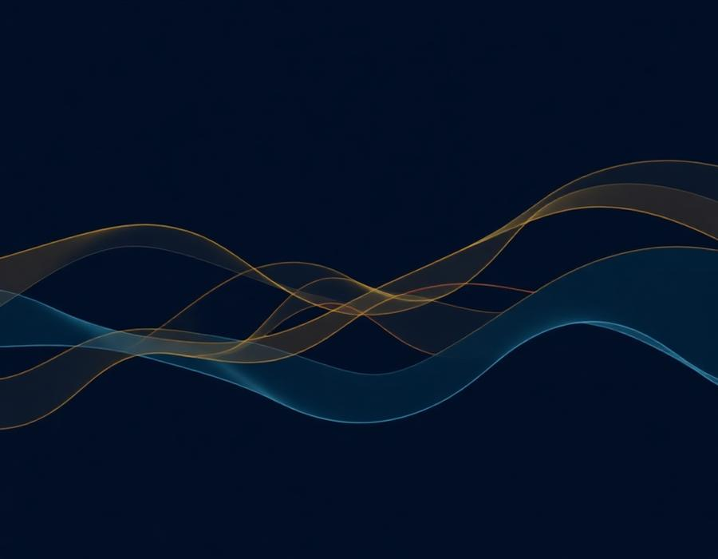
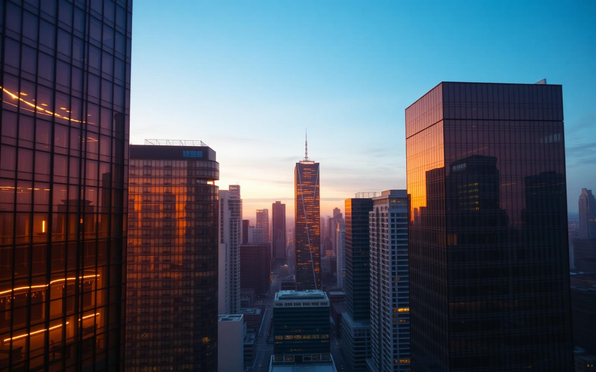

Strategy
Strategi Korporat
Perencanaan jangka panjang, model bisnis, dan analisis pasar untuk memposisikan perusahaan Anda unggul di industrinya.
Pelajari lebih →Nexa adalah mitra strategis bagi perusahaan, firma profesional, dan startup berkembang untuk merancang strategi, tata kelola, dan transformasi digital yang membentuk masa depan bisnis Anda.

Dipercaya oleh perusahaan terkemuka di Asia Tenggara
Kami memadukan strategi, teknologi, dan tata kelola dalam satu ekosistem konsultasi yang terintegrasi.

Perencanaan jangka panjang, model bisnis, dan analisis pasar untuk memposisikan perusahaan Anda unggul di industrinya.
Pelajari lebih →Otomasi proses, arsitektur data, dan penerapan teknologi untuk organisasi yang lebih cepat, cerdas, dan adaptif.
Pelajari lebih →Pendampingan kepatuhan, kontrak, dan manajemen risiko untuk PT, CV, firma hukum, dan kantor akuntan.
Pelajari lebih →Nexa adalah firma konsultansi independen yang berdiri sejak 2014. Kami mendampingi lebih dari 120 perusahaan — mulai dari korporasi multinasional hingga startup pertumbuhan tinggi — dalam mengambil keputusan strategis yang berdampak jangka panjang.
Diagnostik mendalam terhadap konteks, tantangan, dan aspirasi perusahaan Anda.
Merancang blueprint strategi, arsitektur, dan tata kelola yang sesuai skala Anda.
Eksekusi bersama tim internal Anda dengan milestone yang jelas dan terukur.
Pendampingan berkelanjutan agar hasil menjadi kapabilitas jangka panjang.
Bagaimana struktur governance yang tepat menjadi fondasi pertumbuhan yang sehat.
Tiga pilar utama yang sering diabaikan perusahaan saat memulai inisiatif digital.
Kerangka kerja praktis untuk pengambilan keputusan strategis berbasis data.
Konsultasi awal 45 menit — tanpa biaya, tanpa komitmen.